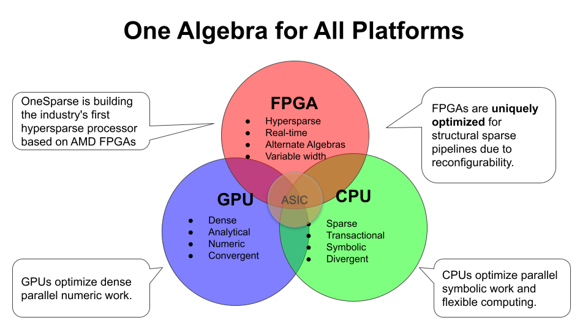
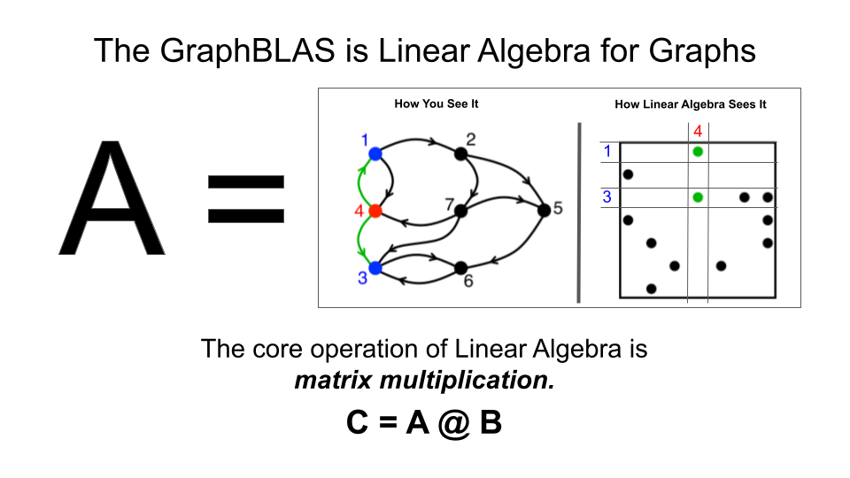

Welcome to OneSparse Postgres
OneSparse is a Postgres extension that bind the powerful SuiteSparse:GraphBLAS Linear Algebra library, exposing it's functionality and new types, functions and operators in Postgres.
Join us in the OneSparse Discussions Board and say hi!.
TLDR; Docker Demo
Start the onesparse demo docker container, substitute suitable password and container name:
docker run -d -e POSTGRES_PASSWORD=password -it --name onesparse-demo-container onesparse/onesparse:0.1.0
The container will start detached in the background, verify it's running with 'docker ps'. Now exec a psql process to interact with the container:
$ docker exec -u postgres -it onesparse-demo-container psql
psql (17.0 (Debian 17.0-1.pgdg120+1))
Type "help" for help.
postgres=# select 'i4'::matrix;
matrix
--------
i4[]
(1 row)
postgres=#
See the Documentation for some examples for creating matrices and vectors. You can verify the doctests with docker using:
Summary
OneSparse Postgres extends the PostgreSQL object relational database with the state-of-the-art SuiteSparse:GraphBLAS high performance dense/sparse linear algebra library. SuiteSparse contains thousands of algorithms optimizing tasks for algebraic graph traversal, machine learning, AI, science, and engineering. SuiteSparse's powerful built-in JIT compiler can target multiple hardware architectures, including GPUs, with no changes to your code.
Join us in the OneSparse Discussions Board and say hi!.
Like the JSON/JSONB types did for unstructured data, OneSparse makes dense and sparse matrices and vectors fully native Postgres types. OneSparse supports optimized, parallel matrix multiplication and other operations like reduction, selection, assignment, extraction, elementwise union, and intersection. These methods can be used for both traditional numeric algebraic computing, or sparse graph analytics over adjacency and incidence matrices.
Like numpy and scipy did for Python, OneSparse transforms Postgres into a powerful framework for linear algebra and its infinite industry application: mathematics, engineering, economics, machine learning, bioinformatics and graph science. Matrix multiplication is as simple as 'A @ B', just as in Python. Leverage SQL for it's power of filtering, viewing and aggregating, and use linear algebra for its power of abstract reasoning, numeric analytical power, and parallel graph analytics.
GraphBLAS is a sparse linear algebra API optimized for processing dense and sparse matrices and in particular graphs encoded as sparse matrices and vectors. In addition to common real/integer matrix algebra operations "plus" and "times", GraphBLAS supports many different "semiring" algebra operations, that can be used as basic building blocks to implement a wide variety of algebraic and graph solutions.
OneSparse Postgres aims to unify the three algebraic paradigms of relational, procedural, and algebraic style approaches. In the image below, all three visualization are presenting the same information: the tabular form shows rows a relational indicating edge relationships, the graphical form shows the procedural approach, and the sparse matrix form shows the algebraic approach.
The diagram below shows the three paradigms of sparse graph computation, relational, procedural and algebraic. Each approach contains the exact same information, each edge is represented as an element of a table, graph, or matrix. With OneSparse, programmers can choose which approach best fits their needs, and move seamlessly between them:

The algebraic approach offers a powerful abstraction over the underlying compute architecture used to do the actual work. Using SuiteSparse's powerful built-in JIT compiler, any hardware architecture can be targeted with no code changes to the algorithm. This cannot be said for the common procedural approach taken by most graph libraries and frameworks.

OneSparse's goal is to enable and encourage the multi-architecture future, where the right hardware is used for the right phase of any particularly complex algorithm or data pipeine. By abstracting away the specific and highly optimzation sensitive hardware details, problem solvers can focus on the problems, and allow hardware specialists to optimize for any given architecture:

Why Linear Algebra?
OneSparse brings the power of Linear Algebra to Postgres. In languages like Python, similar roles are fulfilled with packages like numpy and scipy. OneSparse goes beyond dense matrix multiplication and is highly optimized not only for dense and sparse matrices, but also optimizes for an unlimited number of powerful and and useful algebras by supporting JIT compilation of both built-in and user defined Semirings.
Semirings can be thought of as an abstraction of the "additive" and "multiplicative" operations typically used in Matrix Multiplication. They are particularly useful when implementing graph algorithms across an adjacency matrix:

For example, to compute the shortest path between rows and columns of a sparse matrix, instead of multiplying elements they are added, and instead of adding to reduce to the final value, the minimum is taken. This form of Tropical Algebra is a very powerful mathematical technique used in solving optimization and other minimization and maximization problems.
Another exotic form of Semiring is the Log Semiring which is a powerful tool for traversing graphs whose edges represent probabilities by leveraging Log probability algebra for speed and better numeric stability.
Other GraphBLAS Semirings are used to optimize algebraic operations to minimize data movement. For example, the "any_pair" semiring is used instead of "plus_times" in many Breadth-First Search Algorithms to avoid any mathematical operations and unnecessary data movement Instead of adding results, "any" value is used, thus allowing the JIT compiler to optimize as it sees fit. Instead of loading element values and multiplying them, the "pair" operator is used to simply proceed only if both edges in a multiplication are present, without ever loading or multiplying their values.
OneSparse leverages the expertise in the field of sparse matrix programming by The GraphBLAS Forum and uses the SuiteSparse:GraphBLAS API implementation. SuiteSparse:GraphBLAS is brought to us by the work of Dr. Tim Davis, professor in the Department of Computer Science and Engineering at Texas A&M University. News and information can provide you with a lot more background information, in addition to the references below.
TODO
-
Test harness matrix for all supported pg versions
-
A few missing ops, concat/split/kron
-
Large Object support up to 4TB
-
subscripting syntax support
-
add type[] array casting to vectors and matrices
-
add type[] operators for extract, containment, etc.
-
add type[] constructors and tuple iterators
-
select ops: A < 42
-
lookup semirings with base name and object "lookup('any_pair', A)" for type specific semiring
-
semiring functions? "plus_times(A, B)"
-
Wrap LAGraph
-
Zero-copy into python-graphblas objects in plpythonu
-
psycopg2 packed binary adapters to python-graphblas